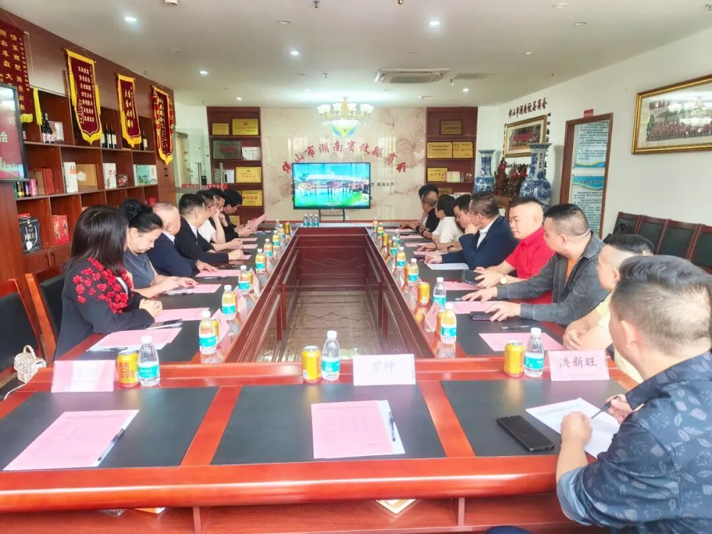
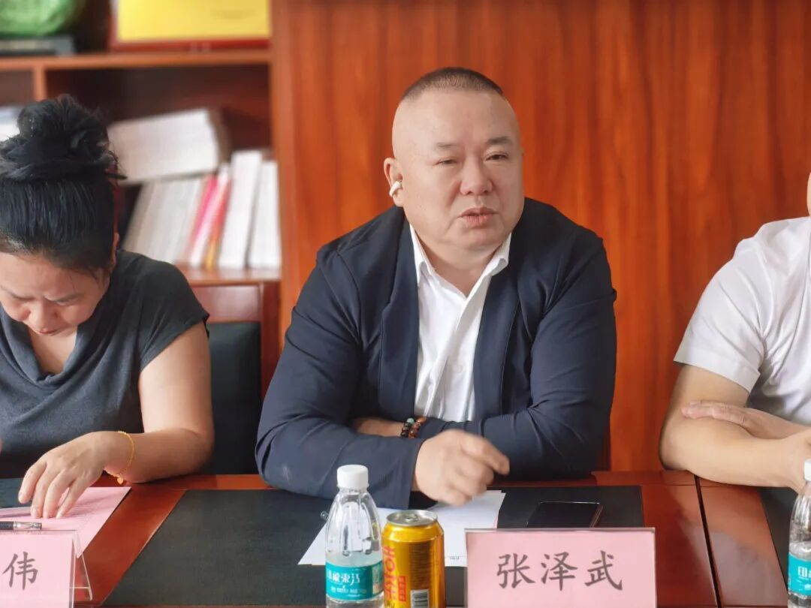
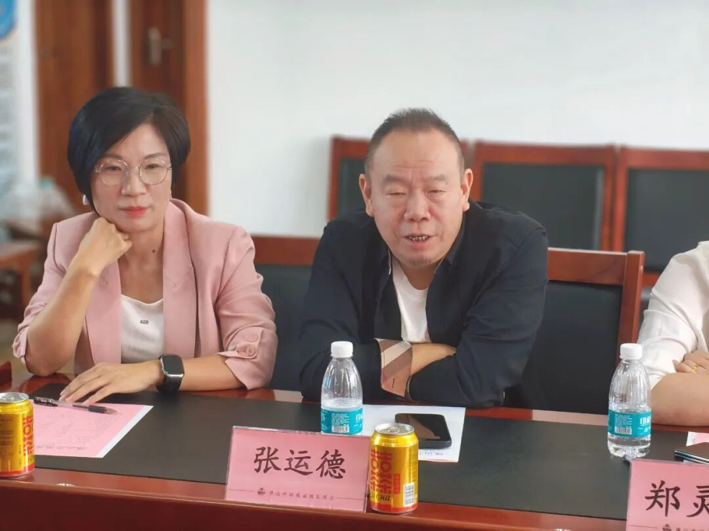
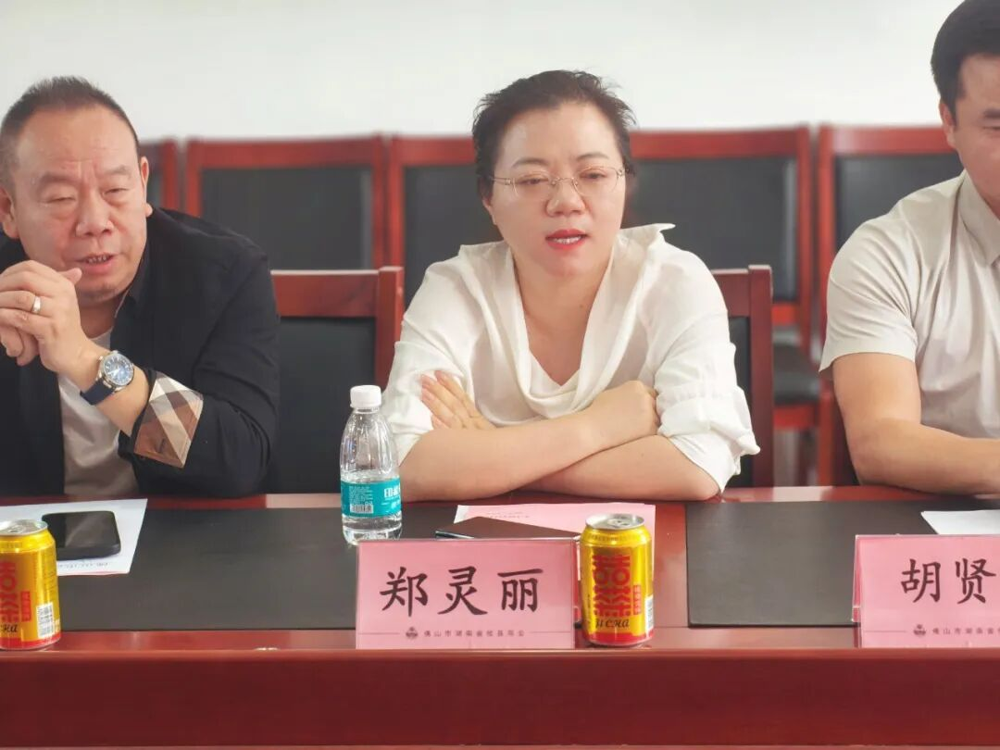
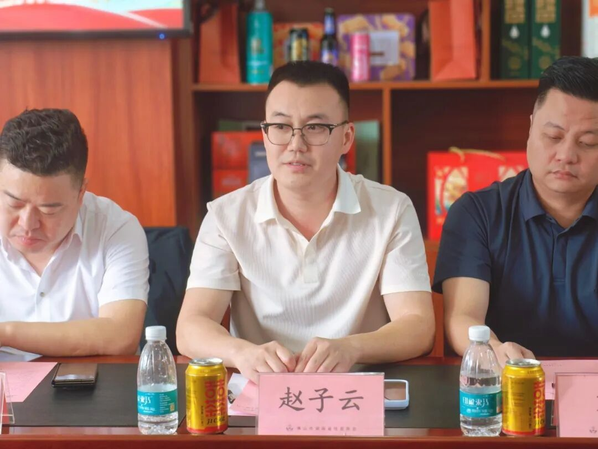
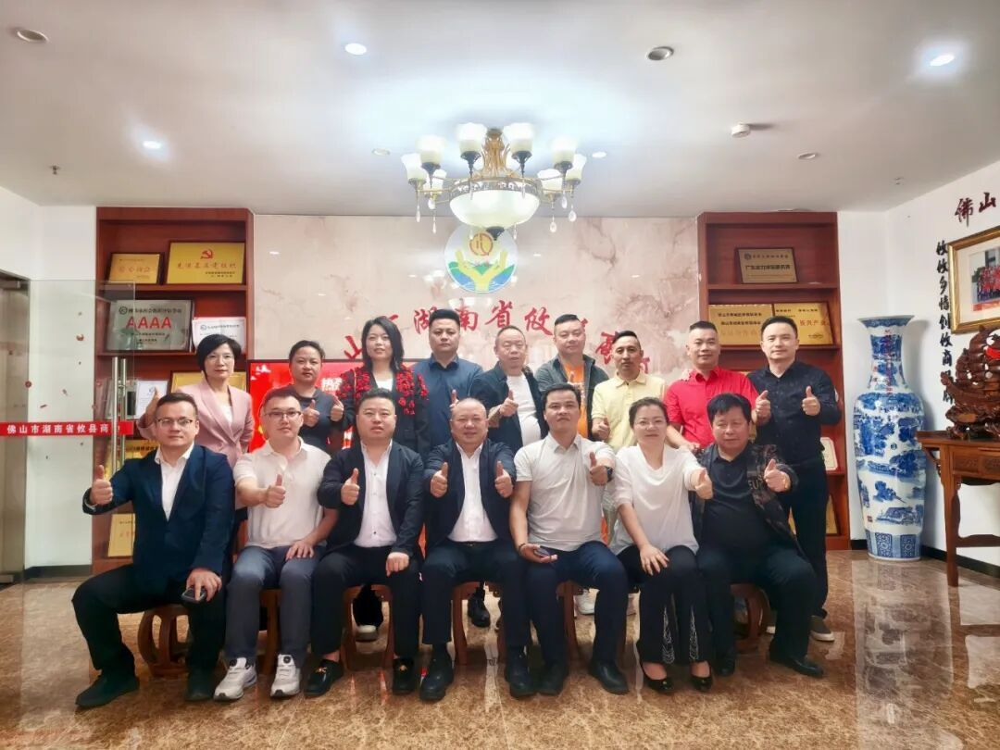

问道佛山取真经，联盟深耕谋长远。
2026年11月13日上午，广东省湖南攸县商会会长张成建、党支部书记张泽武率商会成员赵子云、刘涵、邓丰伟、郝海瑞及秘书处人员一行9人，赴佛山市湖南省攸县商会参观交流。佛山市湖南省攸县商会会长胡贤仔、执行会长郑灵丽、山水分会会长张运德等商会核心领导热情接待并参加座谈，座谈会由秘书长周琪主持。
一、平台推介：共商「大攸商」合作事宜
座谈会伊始，与会人员共同观看佛山市湖南省攸县商会宣传片，直观感受佛山商会在组织建设与会员服务方面的扎实积淀。
随后，广东省湖南攸县商会秘书长曹玉华围绕「大攸商」电商平台战略合作事宜作专题推介。平台于今年4月25日召开启动发布会，县领导到场指导，主打攸县四大地标产品、特色农副产品及会员企业优质产品，目前已上架100多款，运营持续向好。平台由会员企业耗时一年多研发，由广州大攸商贸易有限公司实体运营，采用私域模式，支持线上下单、厂家直发、平台统一售后，技术已经打磨成熟，合规处理税务结算。

根据战略合作协议框架，合作商会入驻商城成为分销商，组织会员推广商城及产品、推荐会员企业优质产品上架销售；会员优质产品一律免费上架，各商会开通独立专属通道，交易利润按可分配利润二八分成，分销商会得80%，平台留存20%用于运维、美工与售后，后台数据公开可查。双方以「大攸商」商城为平台，联合在粤攸县籍商会、行业协会，共享会员、产品、渠道资源，助推家乡产品、赋能会员企业，双重背书、严选品质，共建「商会联盟·品质好物」品牌，为合作落地提供了清晰的制度保障。
二、书记论道：共享平台要靠同乡齐心
广东省湖南攸县商会党支部书记张泽武在发言中指出，平台启动发布会时，攸县政协主席文毅带队一行家乡政府领导亲临现场指导见证，充分体现家乡党委政府对平台建设的高度重视和大力支持；平台长远发展归根结底要靠攸县同乡自己齐心协力来干。平台由省商会牵头，前后开发近两年，技术已经打磨成熟，支持退换货，技术层面完全可以正常运营。
他强调，平台从设计之初就定位于全体攸县人共建共享的公共事业，秉持利他利乡、服务乡友的初心，把商业运营与乡情凝聚有机结合，让每一位参与者都能在规则透明、利益共享的框架下安心投入。平台建设的深层意义在于重塑在外攸商的整体形象与组织方式：过去各商会单打独斗、资源分散，难以形成品牌合力，共享平台恰恰提供了把分散力量拧成一股绳的载体，让攸县人在外有了属于自己的商业阵地和信用背书。平台起步阶段不必追求规模与速度，关键是把机制立起来、把信任建起来；只要同乡齐心、久久为功，平台就能从服务乡友走向反哺家乡，真正成为凝聚全体在外攸县人的精神纽带与事业平台。

三、群贤献策：聚焦落地实操建言
讨论环节，与会人员畅所欲言、建言献策，现场气氛热烈。佛山市湖南省攸县商会常务副会长张运德提出，单做小程序用户粘性不足，应组织专场性质活动，由商会与厂家代表释放福利，既面向普通零售客户，也支持小超市老板达到一定采购量后大批量进货，发展长期合作客户。
常务副会长蔡军接着建议，佛山拥有得天独厚的渠道优势，有六千多家攸县老乡经营的超市，可把平台二维码铺到各家超市门店，借助超市流量引流推广家乡特产，先敲定合作模式、尽快把试点跑通做到利益共享。

执行会长郑灵丽就平台灵魂塑造提出思考。她认为，「大攸商」平台目前还缺少一些灵魂，不能仅停留在商品交易层面，更要注入文化内涵与情感纽带，让平台成为在外攸县人寄托乡愁、认同家乡价值的载体；建议在品牌故事、产品呈现、会员互动中融入攸县人文元素，使平台既有商业效率，更有家乡温度。
秘书长洪新旺以营销4P模型为框架，建议找准平台核心定位，在多快好省中集中力量打透一点，搭建包含商业模式、运营模式、盈利模式、服务模式的完整商业体系，走大单品战略；产品要做出差异化，开发家庭套装、工厂定制套餐、特定场景礼盒等独有供给，价格上适当压缩毛利至3%—5%培养消费粘性，设计登录积分、复购奖励等激励机制，并建议各商会配置专职对接人员。

广东省湖南攸县商会常务副会长赵子云表示，此行全程抱着学习心态而来，各家兄弟商会各有长处、各有特色，都值得吸收借鉴；珠三角攸县同乡本是一家人，共同愿望是在外攸县人事业越做越大、名气越来越响亮。结合一路走访所得，他建议平台建设要兼收并蓄、博采众长，把各地商会的好思路、好做法吸纳进来，比如联动超市渠道、发展直播带货、组织专场促销等，先小范围试点、再逐步推开；平台起步阶段应注重凝聚乡情、做实服务，让会员企业先有获得感，再逐步扩大影响。

四、会长寄语：零风险零投资，先让平台活下去
广东省湖南攸县商会会长张成建在讲话中感谢佛山市湖南省攸县商会各位同仁的热情接待。他坦言，一个县城在广东拥有五家攸县县级商会实属不易，既说明在外同乡人数众多，也代表攸县人足够齐心；看待商会不能单纯以资金实力论好坏，各家商会各有所长，都有值得互相借鉴之处。他阐述此行三个目的：一是学习取经，趁任期期间多到兄弟商会走访学习，把各家办会宝贵经验带回去、传下去；二是交流「大攸商」平台合作推进事宜，平台不属于任何一家商会，也不属于任何个人，而是全体攸县人共有的平台，现已全部搭建打磨完毕，零风险、零投资，会员优质产品审核通过即可免费上架，为以商养会开辟可行路径；三是带下一届候任会长随行认识交流，提前熟悉各家商会办会经验，为商会事业接续传承打好基础。
他强调，现阶段不追求平台一步登天，首要目标是先让平台活下去，依靠攸县同乡内部采购把平台捧起来，踏踏实实经营十年二十年逐步发展壮大，未来运营成熟甚至可以交由政府接手，成为助力家乡产业发展的重要载体。他同时呼吁，各家攸县商会要打破壁垒、多开展联盟互动，活动联合举办、公益联手开展、年会也可合办；唯有抱团发展、联盟联动，把会员资源、产品渠道、活动平台贯通起来，形成互帮互助、互利共赢的内部生态，才能整体放大攸县商会在广东的影响力与话语权。
五、东道致词：先讲清利益，再理明模式
佛山市湖南省攸县商会会长胡贤仔作最后讲话。他表示，成建会长专程带队来佛山走访，场面难得、情谊可贵；泽武书记是攸县在广东成立第一家商会的发起人和创始人，为在粤攸商组织建设开了先河、奠定了基础；子云会长是商会新面孔，为人谦和有格局，商会事业总要靠一届一届年轻人接棒。他结合座谈内容谈了三点看法：
第一，谈合作，先把利益讲清楚、把商业模式理明白。好事要办好，不能只讲情怀不讲规则。建议专门安排两名对接人跟进细节，把合作流程、分成方式、运营职责整理成完整正式方案，提交商会常委会议审议通过后再正式启动执行。
第二，谈平台，跳出单一农产品，把品类做丰富、做细分。仅局限攸县本地农产品，需求量撑不起来；凡符合国家认证标准、具备合法经营资质的产品和服务都可考虑上架，比如预制菜半成品、法律服务、家装门窗、教育咨询、心理咨询等，让用户看到的是品类丰富、分类清晰、真正解决生活需求的平台。
第三，谈商会，抱团联盟是方向，比的不是谁更好，而是谁走得更久。各攸县商会运营水平不分伯仲，真正较量的是谁能活得更久、走得更远；他勉励年轻班子放开手脚推进创新，商会班子和全体会员都是坚强后盾。
六、餐叙交流：乡情融融话未来
会后，佛山市湖南省攸县商会安排了丰盛的午餐，两地商会同仁在轻松热烈的氛围中进行餐叙交流。席间，大家围绕平台落地细节、超市渠道对接、产品品类拓展等话题继续深入探讨，乡音乡情交融，共识在交流中进一步凝聚。

此次佛山之行，既学习了兄弟商会办会的宝贵经验，也为「大攸商」平台在佛山落地跑通明确了路径，更坚定了在粤攸县商会联盟抱团、深耕长远的信心与决心。